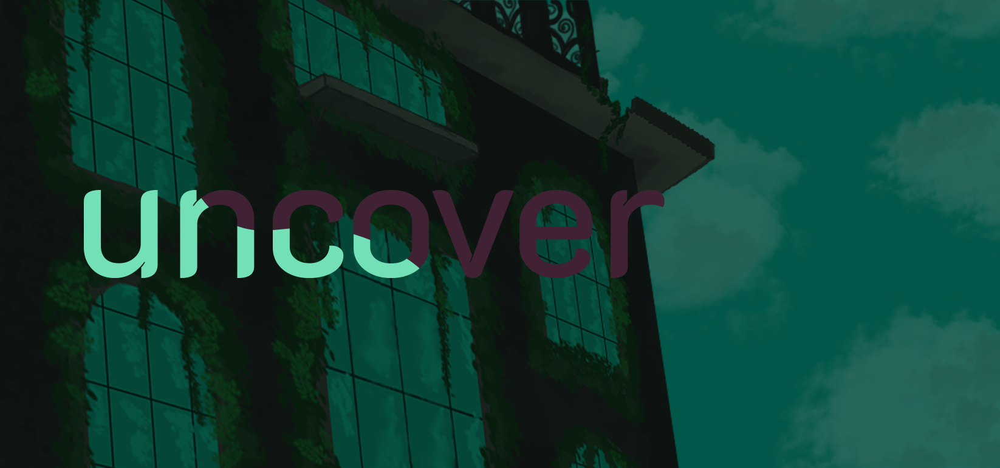
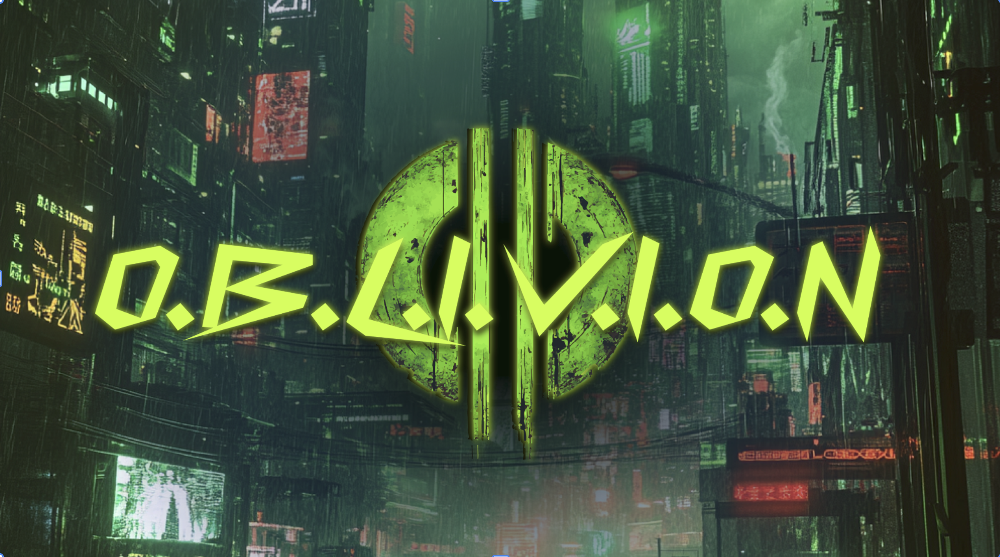
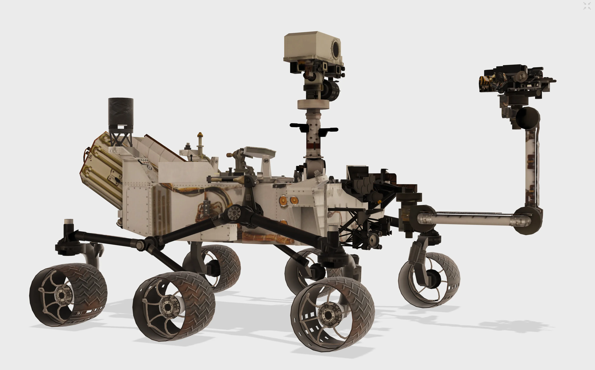
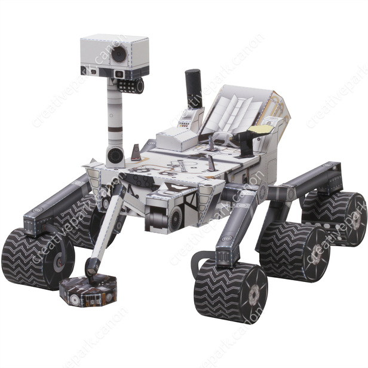

Uncover was one of the two game projects I’ve worked on in my time at iFp, during the summer of ‘24. The story of the game centers a student up against a corrupt school that had put chemicals in the water systems to stop kids from asking questions. The gameplay consisted of some minigames that would be unlocked through the exploration of the school, culminating with a puzzle-based bossfight against the principal to regain control and free your classmates.
After learning to program in Godot 3.5, I was assigned to create a minigame for the creation of the “antidote”, which the protagonist must pour into the water during the final fight to free all the students from their affliction. The idea was that the recipe for the antidote had been torn, removing the section with the required amount of each ingredient. To make the antidote, players would need to match their mixture to the color of the picture on the recipe. I learned a lot about the node-based systems, how to affect various properties correctly for a puzzle game, how to make a diegetic interface for the game, and how to understand player feedback--the system was complicated, and a better tutorial was needed.

OBLIVION was my second project, which I worked on from ‘25 to ‘26. This game was a 2D platformer with stealth and careful navigation. The game’s story is about a dystopian world and a boy who’s joined the rebellion to protect his family--and his home--from the superintelligent malicious AI that controls it. Players must navigate several areas and obstacles to gain information and access the kill switch, where they can choose to destroy the AI or try to control it for themselves.
My job during the summer of ‘25 was to implement the movement mechanics for the player character. I learned a lot about how to make a satisfying platformer and about using state machines. The biggest hurdle by far was the grappling hook, which would pull in the player in an instant to certain objects in the levels. Making the selection for the “grappleables” as we called them was tedious and difficult, but it taught me a lot about perseverance and choosing battles.
Then, during the summer of ‘26, I worked on the dialogue systems and UI for them. It was more of a design challenge, though I did have to deal with some version errors. Choosing the design was very important because it would either aid the feel of the story or kill the immersion. I made several iterations using Canva--shoutout my school for giving us free Education-level on Canva so I could use certain pay-to-use features--and settled for my final design only after connecting with the rest of the team. I also worked on a remote “hacking device”, which could open any technologically-locked doors if you clicked in their proximity. That was easier, but still very fun.
After the summer iFp session of 2026, I wanted to create a game by myself. I had many grand ideas, but settled on recreating Pong instead. I fully polished it up: from randomizing the direction of the ball at the start to the clean UI to the little sound effects, I made it into a proper game. It’s fun to play idly while waiting for things to download on my computer, as I made the enemy AI very simple.


As a part of the Rivers School Robotics Stem Seminar, or STEMinar, I got to build a robot based on a specific idea. I chose to make mine in the likeness of the Curiosity Mars rover. Obviously, it’s not quite as good--it couldn’t actually handle the atmosphere or terrain of Mars, and it’s a lot smaller--but I was able to replicate the key movement systems in a robot that’s about the size of a medium dog.
The Curiosity works on a Rocker-Bogie suspension system. The “Rocker” part comes from how the two main sections of wheels are connected through a differential to the chassis, which can “rock” along with them without being damaged or disconnected. The “Bogie” comes from the lower section of wheels, which are attached on a limb with separate rotation from the main part. The beautiful thing about a well-designed Rocker-Bogie is that all six wheels will remain touching the ground, even on highly irregular terrain. This does come at a price, with this system making the robot larger, heavier, and slower, but it’s not like the Curiosity is in a rush to get off the planet.
My Vicariosity takes direct inspiration from that system, adapted to the tools in our robotics lab. I couldn’t get any custom materials, and I knew that recreating the specific systems of the Curiosity one-to-one wouldn’t be possible. Instead, I adapted them and came away with a product I liked very much. It took some work to add the required stabilization--due to not being able to balance the body of my robot, I needed extra supports to prevent the chassis from swinging down and disconnecting all the wiring. The restraints I faced in comparison to what the researchers at NASA were able to produce inspired my robot’s name, a play on “Vicarious” and “Curiosity” that I interpret as “the desire to experience new things through the experiences of others”.
Got any other questions?
You can find me on LinkedIn here.